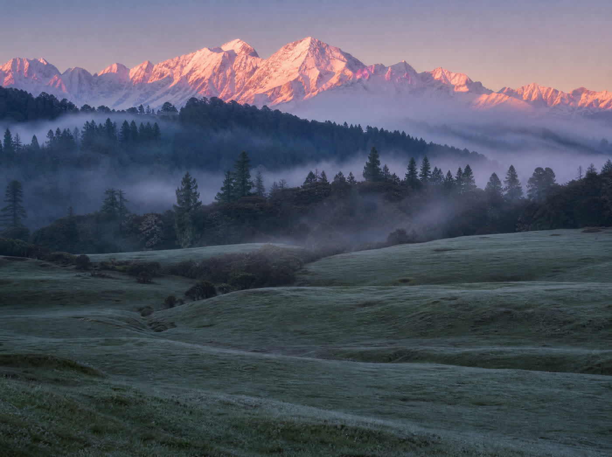

Not crowded
Quiet roads and easy rooms. You can hear the river.
शांत · Shaant
You came to the hills for quiet.
Then the town was full.
An hour stuck on Mall Road, and hotels at weekend prices.
The quiet is still there.
Just on a different day.
शांत · Shaant
Type a place in Uttarakhand. See how crowded it will be, the weather, stays in your budget, what to see, and the drive.
Crowd levels come from a model trained on sample data, so read them as a guide to the season, not a headcount.
Where to stay
Each tick on the bar is a stay here. Only well-known stays are named. Prices are rough and change a lot with the season and at weekends, so tap Check price for today's rate.
Places to see
Getting there
Drive times are estimates that allow for hill roads. Google Maps has live traffic.
Open in Google MapsHow to read it
Quiet roads and easy rooms. You can hear the river.
The usual number of people. Book a day or two ahead.
Queues, slow traffic and full hotels. Pick another day if you can.
When your day is very crowded, Shaant shows the nearest calmer day. One tap moves your plan to it.
Under the hood
Not a rule of thumb, and not a table someone typed in. A classifier learned the pattern from seven years of daily numbers, and every answer it can give is built into this page before you open it.
01 · The model
A gradient-boosted tree classifier sorts a destination and a date into Not crowded, Normal crowd or Very crowded: 300 trees over nine features. scikit-learn does the label encoding, the stratified 80/20 split and the scoring. The probability behind the winning class is the confidence shown on your crowd card.
XGBClassifierscikit-learnpandas
02 · The data
One row per destination per day, 29 places from 2018 to 2024, each with visitors, temperature, rainfall, an event count and search interest. The three labels are cut at the visitor quartiles. Five of the nine features summarise that destination's own history on the same calendar day, which is how a date in 2027 gets an answer at all.
29 destinations7 years, daily9 features
03 · On this page
A browser cannot run Python, so an export script asks the model every question this page can ask, 29 destinations across 853 days, and packs the replies into a 107 KB file. Your forecast is then a lookup, with no server anywhere. Weather and the drive are fetched live, only when you ask for them.
export_site_data.pydata.jsstatic host
How sure it is
57.2% right on a held-out fifth of the days, where always answering Normal crowd scores 50.1%. The visitor data is synthetic, and one history feature includes the day being predicted: take that out and accuracy falls to 47.2%. So Shaant reads the season well, and cannot yet tell one town's crowd from another's.
Hotel prices are not modelled. They are rough ranges from general knowledge, and every stay card links out for today's rate.
The model, the data and the codeThe other way
When the famous towns fill up, these stay calm. Same mountains, far fewer people.

Meadows and trek
Meadows and pine forest at 2,680 m. Camps and guesthouses, no hotel strip.
Mountain views
The Panchachuli peaks fill the sky here. A long drive, with almost nobody on it.
Orchards and cliffs
Orchards, an old hilltop temple and the cliffs at Chauli Ki Jali. Past Nainital, and much quieter.
Good to know
For clear skies and open roads, March to early June and mid September to November. July and August are monsoon months, when landslides can shut roads for a day or more. December and January bring snow to the higher places.
Yes. On busy weekends Nainital has only let cars in with a hotel booking, and the queue at the Rusi bypass ran two kilometres. Mall Road in Mussoorie can take over an hour. If your day shows Very crowded, try the calmer day Shaant suggests.
Hill roads are narrow and often one lane. Trucks back up to let cars pass, and there are road works on the way. Shaant adds time for that and for the climb. Try to arrive before dark, because night driving in the hills is best avoided.
Treat it as a guide to the season, not a promise. The model learned from sample data, so it knows busy months from quiet ones but cannot yet tell one town's crowd apart from another's.
No. They are rough ranges that change with the season and at weekends. Tap Check price on any card for today's rate.
The place you search stays in your browser. If you share your location or type a city, it goes only to the route service to draw the drive.
Pick the calm day before you book the room.
Where do you want to go?